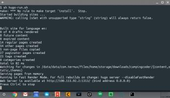

Also on https://www.campingcoder.com/
Running Tmux for Termux on a …
Using Termux is awesome, except with Chrome OS's limit on one window it …
Resetting My Chromebook Back …
Chrome 63 required a Power Wash - I took this opportunity to fully reset …
Review of Duragloss 501 RV Polish · …
As part of our Camper Maintenance series, we review Duragloss 531 …

Running Hugo on Chromebook · …
Android apps coming to Chrome OS has really changed the way I that I …
gulp = a new workflow · Camping Coder
In the latest turn of events, I've simplified my hugo workflow a little and …